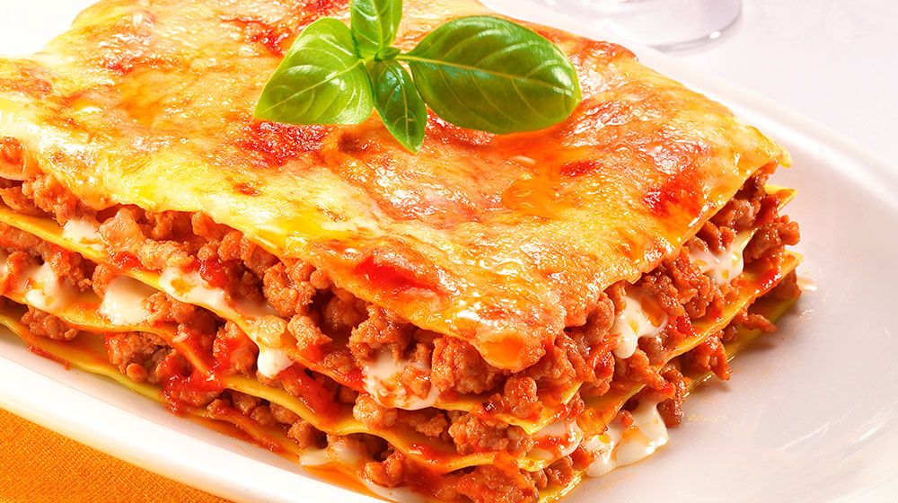

Lasagna Recipe

Description
This classic lasagna recipe is a hearty, comforting dish made with layers of tender pasta,
rich meat sauce, and a creamy blend of cheeses. It is the perfect meal for family
gatherings and can be customized with your favorite herbs and vegetables.
The secret to a great lasagna lies in the balance of flavors between the tangy tomato sauce
and the smooth ricotta cheese. Baked until golden and bubbly, this dish is sure to
become a favorite in your kitchen.
Ingredients
- 12 lasagna noodles
- 1 pound lean ground beef
- 2 cloves garlic, minced
- 1 jar (28 ounces) marinara sauce
- 1 container (15 ounces) ricotta cheese
- 1 egg, lightly beaten
- 4 cups shredded mozzarella cheese
- 1/2 cup grated Parmesan cheese
Steps
- Preheat your oven to 375°F (190°C).
- Cook the lasagna noodles in a large pot of boiling water according to package directions.
- In a large skillet, cook the ground beef and garlic over medium heat until browned. Drain the fat and stir in the marinara sauce.
- In a medium bowl, combine the ricotta cheese with the lightly beaten egg.
- In a 9x13 inch baking dish, spread a thin layer of meat sauce. Top with layers of noodles, ricotta mixture, and mozzarella cheese.
- Repeat the layers, ending with a thick layer of mozzarella and Parmesan cheese on top.
- Cover with foil and bake for 25 minutes. Remove foil and bake for another 25 minutes until the cheese is bubbly and golden.
- Let it rest for 15 minutes before serving.
Home